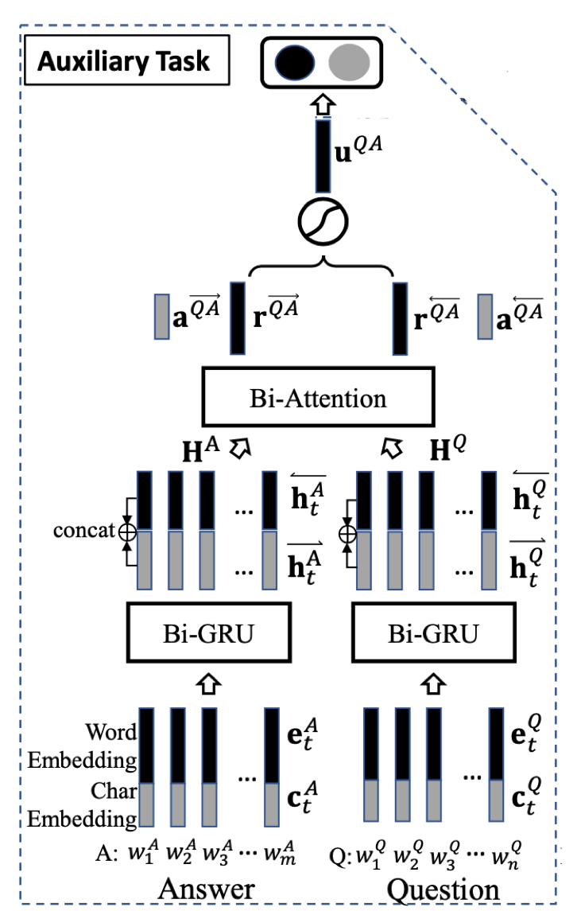
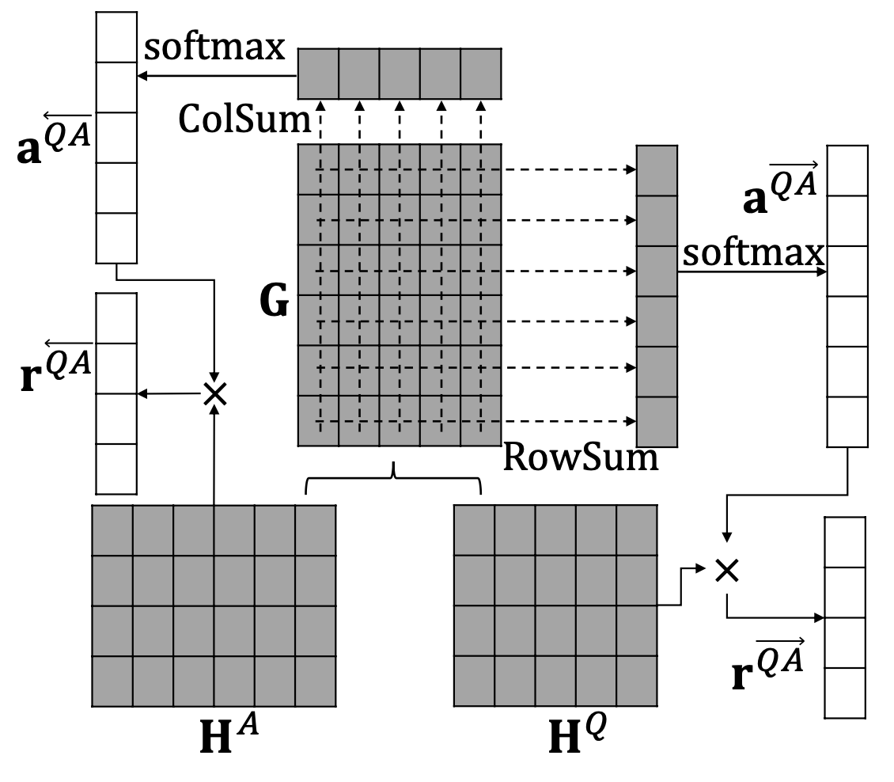

Answer Identification from Product Reviews for User Questions by Multi-Task Attentive Networks
1 问题定义¶
给定一个标注的 QR 对的集合 S^{qr} = \{(Q,R,y^{QR})\} ，其中 Q 是一个用户已提交的问题，R 是一个评论语句，y^{QR}∈\{0,1\} 是推断 R 是否可以回答问题 Q 的二元标签。同时，还有一个从用户问答数据中自动标注的 QA 对的集合 S^{qa} = \{(Q,A,y^{QA})\} ，其中 y^{QA}∈\{0,1\} ，表示 A 是否可以回答问题 Q。基于集合 S^{qr} 和 S^{qa} 为 QR task 训练一个分类模型，对于一个新的 QR 对 (Q^{new},R^{new}) ，该模型能够准确地预测出 R^{new} 是否可以回答问题 Q^{new}。
2 模型描述¶
2.1 模型概述¶
本文提出了一个包含 QA task 和 QR task 任务的多任务深度学习模型 QAR-Net，其中，QR task 为主任务，QA task 为辅助任务，它们都包含文本编码、注意力池化、融合和输出四个阶段。在模型训练时，首先在 QA task 上进行预训练，然后在QR task 进行微调。
对于 QA task，只对 QA-Net 在集合 S^{qa} = \{(Q,A,y^{QA})\} 进行预训练；在文本编码阶段，分别对问题 Q 和 答案 A 通过词嵌入和字符嵌入拼接成向量后，使用双向 GRU 进行编码得到隐层表示 H^Q 和 H^A；在注意力池化阶段，对 H^Q 和 H^A 使用双向注意力机制来学习问题焦点和答案模式之间的映射关系，得到注意加权的表示 r^{\overset{\longrightarrow}{QA}} 和 r^{\overset{\longleftarrow}{QA}}，在融合阶段，将 r^{\overset{\longrightarrow}{QA}} 和 r^{\overset{\longleftarrow}{QA}} 融合激活得到 u^{QA}，最终在输出阶段使用 u^{QA} 进行分类预测。
对于 QR task，预训练的 QA-Net 的基础上加入 R-Net 在集合 S^{qr} = \{(Q,R,y^{QR})\} 上进行微调，注意此时 A-Net 的输入为评论 R 。在文本编码阶段，分别对问题 Q 和评论 R 通过词嵌入和字符嵌入拼接成向量后，使用双向 GRU 进行编码得到隐层表示 H^Q 和 H^R；在注意力池化阶段，对于 QA Net， H^Q、H^R 使用双向注意力机制来学习问题焦点和答案模式之间的映射关系，得到 r^{\overset{\longrightarrow}{QA}} 和 r^{\overset{\longleftarrow}{QA}}，对于 R-Net， H^R 使用自注意力机制来学习评论语句中与焦点相关的内容，得到 r^R；在融合阶段，将 QA-Net 的 r^{\overset{\longrightarrow}{QA}} 和 r^{\overset{\longleftarrow}{QA}} 融合激活得到 u^{QA} 后，与 R-Net 的 r^R 融合激活得到 g^{QR}，最终在输出阶段使用 g^{QR} 进行分类预测。
2.2 QA task¶
QA 辅助任务，目的是学习问题焦点和答案模式的映射关系。在此任务中，只使用 QA-Net 在集合 S^{qa} = \{(Q,A,y^{QA})\} 上进行预训练。
模型结构¶
QA task 包含 Q-Net 和 A-Net，其结构如下

文本编码¶
用 Q=<w_t^Q>^n_{t=1} 和 A = <w_t^A>^m_{t=1} 分别表示问题和答案序列；序列中的每个词 w_t 首先被转换成词级别的嵌入向量 e_t 和字符级别的嵌入向量 c_t，然后将 e_t 与 c_t 拼接后送入双向 GRU 网络来获得低层次的表示 h_t
我们用列向量来表示 h_t，从而每个序列可表示成矩阵 \text{H}；对于 Q 和 A，有 \text{H}^Q \in \mathbb{R}^{2u \times n}, \text{H}^A \in \mathbb{R}^{2u \times m}。
注意力池化¶
在 QA task 中，使用双向注意力机制来提取问题焦点和答案模式，如图所示。

首先，计算 \text{H}^Q 和 \text{H}^A 的相似矩阵 \text{G}
其中，\text{U} \in \mathbb{R}^{2u \times 2u} 为参数矩阵。然后将 \text{G} 分别对行、列求和（求和池化）后计算注意力权重
最后，计算注意力加权的 \text{QA} 表示
融合 & 输出¶
首先，将 r^\overset{\rightarrow}{QA} 和 r^\overset{\leftarrow}{QA} 融合激活
其中，\text{W}^{\overset{\rightarrow}{qa}} 和 \text{W}^{\overset{\leftarrow}{qa}} 是 2u \times 2u 的参数矩阵。最后使用 u^{QA} 来预测标签
2.3 QR task¶
QR 主任务，目的是在预训练的 QA-Net 上使用集合 S^{qa} = \{(Q,A,y^{QA})\} 进行微调，学习问题焦点、答案模式和评论中焦点内容之间的关系。
模型结构¶
QR task 除包含 QA task 的 Q-Net 和 A-Net 外，还包含 R-Net，其结构如下

在 QR task 中，模型左侧的 QA-Net 只需将 A-Net 的输入变为评论 R，按 QA task 相同的处理方式依次进行文本编码、注意力池化和融合过程，得到 u^{QR}。对于右侧的 R-Net 处理方式如下。
文本编码¶
用 R=<w_t^R>^l_{t=1} 来表示评论序列；经过与 QA task 中文本编码过程相同的处理，可得到矩阵 \text{H}^R \in \mathbb{R}^{2u \times l}。
注意力池化¶
在 QR task 中，对矩阵 \text{H}^R 使用自注意力机制来提取评论中的焦点内容
其中，\text{U}^r \in \mathbb{R}^{k \times 2u}, \text{v} \in \mathbb{R}^k 为自注意力机制的参数。
融合 & 输出¶
将 QA-Net 得到的 u^{QR} 和 R-Net 得到的 r^R 进行融合激活
最后，使用 g^QR 来预测最终标签
参考文献¶
Long Chen, Ziyu Guan, Wei Zhao, Wanqing Zhao, Xiaopeng Wang, Zhou Zhao, and Huan Sun. Answer Identification from Product Reviews for User Questions by Multi-Task Attentive Networks. AAAI 2019. [paper]